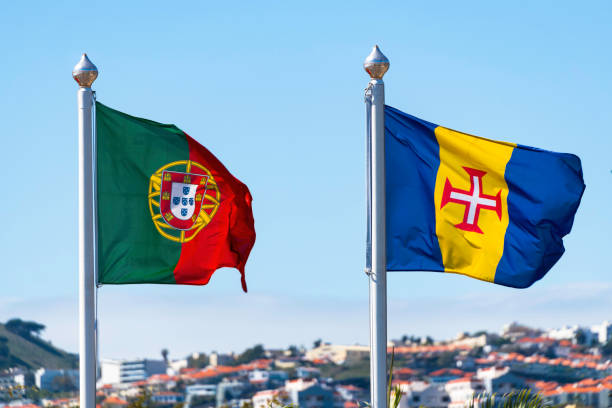

Madeira
Madeira is a small island owned by Portugal, located off the coast of Morocco. It lies in the middle of the Atlantic Ocean, north of the Canary Islands. Madeira means "wood" in Portuguese, as the island is covered in woodlands.
Espetada
Espetada translates roughly to sword or skewer. They are famous around Madeira Island. At Skewer House, we are a family-run business. Our recipes have been handed down through generations, making our espetadas unique with Madeira running through the heart of it.
